用户体验 产品的设计重点


什么体验是好的?
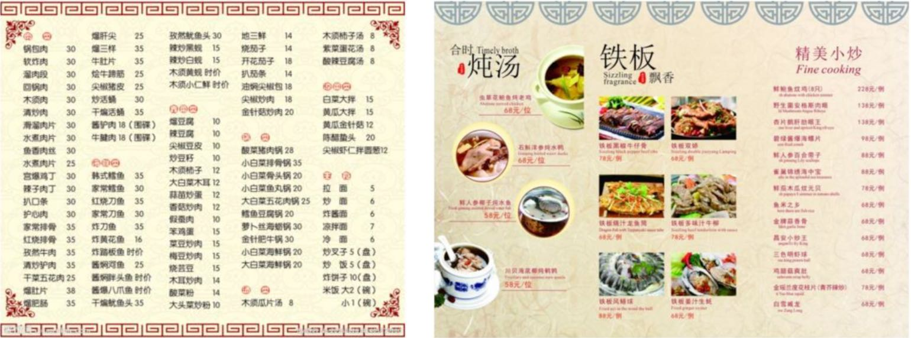

1、什么是用户体验

用户体验定义
用户体验(User Experience，简称UE)是用户 在针对使用或期望使用的产品过程中建立起来的一种纯主观感受 。
ISO标准补充解释:
用户体验，即用户在一个产品 使用之前、使用期间、 使用之后 全部感受。
包括情感、信仰、喜好、认知印象、生理和心里反应、行为和成就的各个方面。
产品如人，人如产品，用户体验正如一个人与另一个人交往相处， 这个过程一定要美好，而不能是无底线的考验对方。所以，我们产品设计主要原则目的就是不断优化用户的产品体验。

用户经常不爽的体验
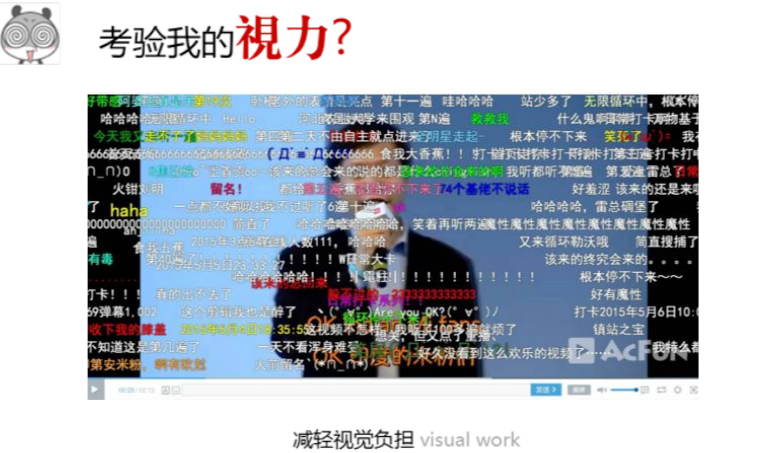
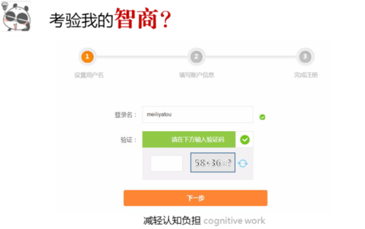
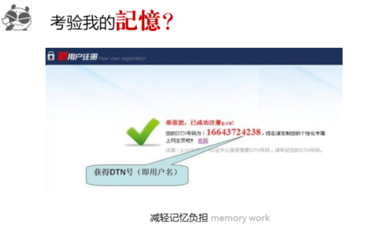
用户体验的层次
用户在使用产品的过程中，会产生各种各样的主观感受，若将这些主观感受分级，即可得出用户体验的金字塔层次。

用户体验金字塔
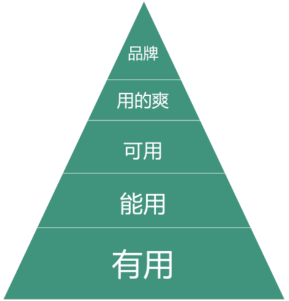

有用
用户体验最底层是产品价值，对于用户来说是否真正有用?
即用户在使用过程中能否获得产品的核心价值。
能用
指用户在使用产品的过程中，流程尚能走通，只不过感觉还
比较粗糙，基本上属于凑合或者可以忍受。
可用
用户发现有用，并且也能用了，这个时候就想知道怎么 去用，怎样操作更容易和方便。可用更多说的是产品的 可用性。
用的爽
用户能方便地使用产品后，接下来需要关注的是对用 户友好和用户感情的需求，满足用户的心里预期，更 加人性化，最终让用户感觉爽爆。
品牌
用户使用产品很爽之后，就会持续使用，久而久之，产 品对用户就产生了影响力，用户也对产品产生了忠诚度。 不仅如此，他们可能还会将此分享给其他人，口碑相传， 最终形成了产品与用户的信赖关系，从而产品产生了影 响力和知名度。

2、用户体验设计详解

A、用户体验的分类

用户体验的分类
用户使用产品之后，会形成各种各样的主观感受，若将这 些分类，则可细分为:感官体验、交互体验、情感体验、 价值体验、信任体验。

感官体验分类
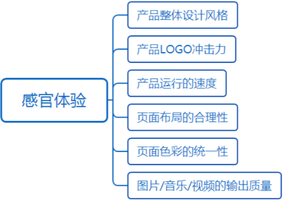
交互体验分类
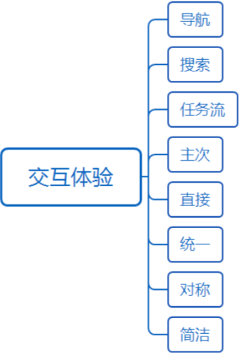
情感体验分类
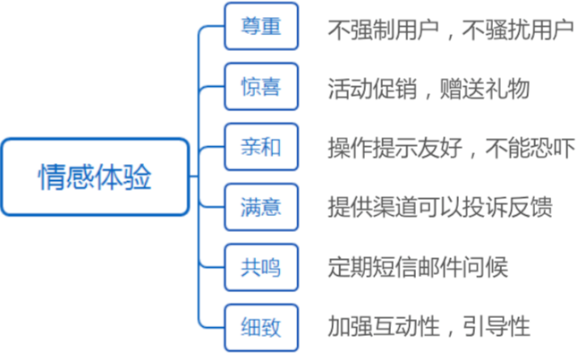
价值体验分类
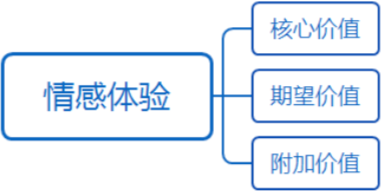
信任体验分类
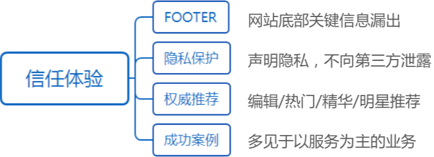

B、用户体验交互设计
用户体验交互设计
交互设计可以分为基于流程的交互和基于界面的交互，以 用户为导向的交互设计，应遵循以下几点原则:
主次原则、直接原则、统一原则、 反馈原则、对称原则、简洁原则。

主次原则
主次的排序直接影响用户体验，到底怎么排放取决于需要重点 引导用户操作的功能或内容。
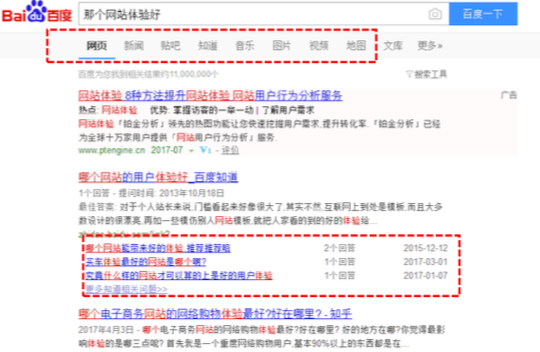
直接原则
重要核心的功能或内容不要让用户思索，最好直接暴露出来。
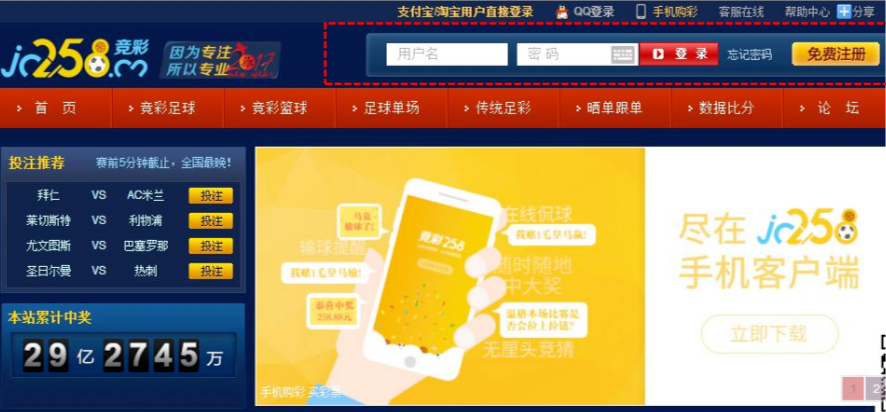
统一原则

统一变现为两个方面，一个是表现层，一个是功能层。
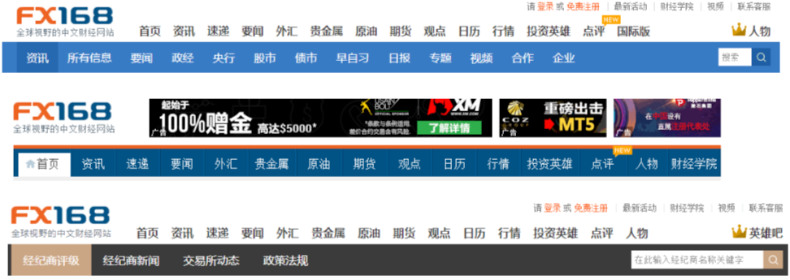
反馈原则
尽量对用户的每个操作做到人机交互，让用户清楚自己的当前 状态，减少疑惑，有时候还能引导用户操作。
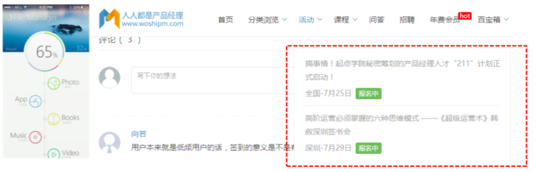
对称原则

对称原则并不是设计上，而是在功能层面是指用户操作
反悔时，想回到原来的状态。最佳的方式为:
原始状态 → 用户操作 → 用户取消操作 → 恢复到原始状态
简洁原则

简洁包括页面简洁和文字简洁，包括提示语等。